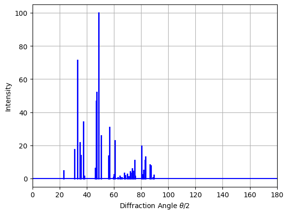

XRD Modeling#
import pandas as pd
xrd_df = pd.read_csv('xrd_dataset.csv')
display(xrd_df)
| mp_id | formula | composition | crystal_system | symmetry_symbol | volume | density | xray_peaks | xray_intensities | |
|---|---|---|---|---|---|---|---|---|---|
| 0 | mp-1005 | FeP | {'Fe': 1, 'P': 1} | Orthorhombic | Pnma | 90.583862 | 6.366076 | [23.15086164 31.02195798 33.23866128 34.822846... | [4.73131274e+00 1.76544138e+01 7.14334109e+01 ... |
| 1 | mp-1006367 | Ce2HfSe5 | {'Ce': 2, 'Hf': 1, 'Se': 5} | Orthorhombic | Pnma | 785.754385 | 7.215011 | [13.59855865 14.68007171 15.5587516 17.216162... | [9.04260718e+00 3.88889592e+00 1.48704078e+01 ... |
| 2 | mp-1001606 | LuFeC2 | {'Lu': 1, 'Fe': 1, 'C': 2} | Orthorhombic | Amm2 | 45.919844 | 9.215206 | [24.87354653 25.79708699 30.23085522 36.139916... | [ 39.06976227 9.24752455 24.85129267 100. ... |
| 3 | mp-1001613 | LuGa | {'Lu': 1, 'Ga': 1} | Orthorhombic | Cmcm | 87.819318 | 9.253483 | [16.89543051 22.68791393 28.22757053 32.128373... | [5.68120675e-01 9.04300155e+00 2.95353313e+01 ... |
| 4 | mp-1008624 | YBiPd | {'Y': 1, 'Bi': 1, 'Pd': 1} | Cubic | F-43m | 74.987877 | 8.952998 | [23.01240126 26.63332165 38.0207848 44.910730... | [ 36.27131039 27.19850555 100. 19.56... |
| ... | ... | ... | ... | ... | ... | ... | ... | ... | ... |
| 16423 | mp-1213830 | Ce3W(ClO2)3 | {'Ce': 3, 'W': 1, 'Cl': 3, 'O': 6} | Hexagonal | P6_3/m | 408.805926 | 6.552238 | [10.94822859 19.02128174 19.71983192 21.998023... | [5.40912233e+01 1.50813133e+00 2.77921414e+00 ... |
| 16424 | mp-1191620 | PuB4Ru | {'Pu': 1, 'B': 4, 'Ru': 1} | Orthorhombic | Pbam | 244.423386 | 10.552355 | [15.29269094 16.67763625 21.34936852 25.258563... | [2.17205238e+00 6.61441181e+00 2.08615588e+01 ... |
| 16425 | mp-1209360 | Pr5Bi3Br | {'Pr': 5, 'Bi': 3, 'Br': 1} | Hexagonal | P6_3/mcm | 552.581472 | 8.482577 | [10.53062158 18.29148783 21.1515142 22.538613... | [3.24368270e+00 2.33769877e+00 8.04064192e-01 ... |
| 16426 | mp-1190710 | Sc5(In2Co)2 | {'Sc': 5, 'In': 4, 'Co': 2} | Orthorhombic | Pbam | 440.878854 | 6.040735 | [10.18858728 12.69727266 15.48118582 19.264295... | [1.37660375e+00 4.27657761e-02 1.92963728e+00 ... |
| 16427 | mp-316 | MnV | {'Mn': 1, 'V': 1} | Cubic | Pm-3m | 23.289978 | 7.549046 | [31.32280162 44.88667126 55.75338872 65.354163... | [ 0.43329361 100. 0.11666426 14.54... |
16428 rows × 9 columns
import ast # <- parses Python literals from text
# Generate a list of elements in the dataset:
ELEMENTS = set()
for v in xrd_df['composition'].values:
ELEMENTS |= set(ast.literal_eval(v).keys())
ELEMENTS = sorted(ELEMENTS)
# Generate a list of the crystal systems in the dataset:
CRYSTAL_SYSTEMS = sorted(set(xrd_df['crystal_system']))
# Generate a list of the symmetry symbols:
SYMM_SYMBOLS = sorted(set(xrd_df['symmetry_symbol']))
# print the sizes of ELEMENTS and CRYSTAL_SYSTEMS
print('Number of elements:', len(ELEMENTS))
print('Number of symmetry symbols:', len(ELEMENTS))
print('Number of crystal systems:', len(CRYSTAL_SYSTEMS))
Number of elements: 85
Number of symmetry symbols: 85
Number of crystal systems: 7
import re
import matplotlib.pyplot as plt
def parse_xrd_data(row):
peaks_str = re.sub(r'\s+', ',', row['xray_peaks'].strip(' []'))
ints_str = re.sub(r'\s+', ',', row['xray_intensities'].strip(' []'))
peaks = ast.literal_eval(peaks_str)
ints = ast.literal_eval(ints_str)
return peaks, ints
def plot_xrd(peaks, intensities):
plt.figure()
for x, y in zip(peaks, intensities):
plt.plot([x,x], [0, y], color='b', linewidth=2)
plt.axhline(color='b')
plt.xlim((0,180))
plt.grid()
plt.ylabel('Intensity')
plt.xlabel(r'Diffraction Angle $\theta / 2$')
plt.show()
from mp_api.client import MPRester
from pymatgen.analysis.diffraction.xrd import XRDCalculator
from pymatgen.symmetry.analyzer import SpacegroupAnalyzer
from tqdm import tqdm
import numpy as np
xrd_df_clean = xrd_df.copy()
# with MPRester(mute_progress_bars=True) as mpr:
# for i, row in tqdm(xrd_df.iterrows(), total=len(xrd_df)):
# mpid = row['mp_id']
# structure = mpr.get_structure_by_material_id(mpid)
# if isinstance(structure, list):
# structure = list[0]
# # important to use the conventional structure to ensure
# # that peaks are labelled with the conventional Miller indices
# sga = SpacegroupAnalyzer(structure)
# conventional_structure = sga.get_conventional_standard_structure()
# # this example shows how to obtain an XRD diffraction pattern
# # these patterns are calculated on-the-fly from the structure
# calculator = XRDCalculator(wavelength="CuKa")
# pattern = calculator.get_pattern(
# conventional_structure, two_theta_range=(0,180))
# peaks = np.array(pattern.x).tolist()
# intensities = np.array(pattern.y).tolist()
# xrd_df_clean.at[i, 'xray_peaks'] = str(peaks)
# xrd_df_clean.at[i, 'xray_intensities'] = str(intensities)
xrd_df_clean.to_csv('xrd_dataset_clean.csv', index=False)
plot_xrd(*parse_xrd_data(xrd_df.iloc[0]))

import numpy as np
def vectorize_composition(composition, elements):
""" converts an elemental composition dict to a vector. """
total_n = sum(composition.values())
vec = np.zeros(len(elements))
for elem, n in composition.items():
if elem in elements:
vec[elements.index(elem)] = n/total_n
return vec
def vectorize_crystal_system(crystal_system, systems):
""" converts a crystal system to a vector. """
vec = np.zeros(len(systems))
if crystal_system in systems:
vec[systems.index(crystal_system)] = 1.0
return vec
def vectorize_symmetry(symmetry_symbol, symbols):
""" converts a symmetry symbol to a vector. """
vec = np.zeros(len(symbols))
if symmetry_symbol in symbols:
vec[symbols.index(symmetry_symbol)] = 1.0
def vectorize_xrd_spectrum(peaks, intensities, intensity_scale=100, bins=180):
hist, _ = np.histogram(
peaks, bins=bins,
range=(0, 90),
weights=intensities)
return hist / max_intensity
def parse_data_vector(row):
""" parses x and y vectors from a dataframe row """
# parse the xray peaks and intensities
peaks_str = re.sub(r'\s+', ',', row['xray_peaks'].strip(' []'))
ints_str = re.sub(r'\s+', ',', row['xray_intensities'].strip(' []'))
peaks = ast.literal_eval(peaks_str)
ints = ast.literal_eval(ints_str)
# parse the composition dict:
composition_dict = ast.literal_eval(row['composition'])
# parse feature vector (x):
x_vector = np.concatenate([
vectorize_composition(composition_dict, ELEMENTS),
np.array([ row['density'] ]),
])
# parse label vector (y):
y_vector = np.concatenate([
np.array([ row['band_gap'] ]),
np.array([ bandgap_direct ])
])
return x_vector, y_vector